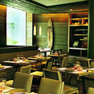
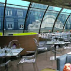
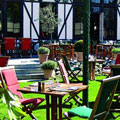
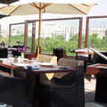
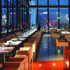

Designer's Restaurants
Best Restaurants Paris proposes a selection of the city's leading establishments. Daring sweet & sour, impressive associations of textures,... You will choose an inventive cuisine restaurant in the heart of Paris or on your doorstep. You will select that inventive cuisine restaurant that tempts you most from the information we give you: photos, extracts from the carte, and practical details, providing you with all the elements you need to calmly book your inventive cuisine restaurant.

Phone: +33 1 56 43 40 90
Fax : +33 1 43 59 10 87
Send Email | Visit Our Website
Market
15, avenue Matignon - Paris 8èmePhone: +33 1 56 43 40 90
Fax : +33 1 43 59 10 87
Send Email | Visit Our Website

Phone : +33 1 40 39 09 00
Fax : +33 1 40 39 09 10
Visit Our Website
Kong
1, rue du Pont-Neuf - Paris 1erPhone : +33 1 40 39 09 00
Fax : +33 1 40 39 09 10
Visit Our Website

Phone : +33 1 47 43 49 56
Fax : +33 1 40 71 83 24
Send Email | Visit Our Website
Le Roland Garros
2 bis, avenue Gordon Bennett - Paris 16èmePhone : +33 1 47 43 49 56
Fax : +33 1 40 71 83 24
Send Email | Visit Our Website

Phone : +33 1 47 53 68 00
Fax : +33 1 47 53 68 18
Send Email | Visit Our Website
Les Ombres
27, quai Branly - Paris 7èmePhone : +33 1 47 53 68 00
Fax : +33 1 47 53 68 18
Send Email | Visit Our Website

Osmose
31, avenue de Versailles - Paris 16èmePhone : +33 1 45 20 74 12
Fax : +33 1 45 20 74 17
Send Email | Visit Our Website

Phone : +33 1 44 78 47 99
Fax : +33 1 44 78 48 93
Restaurant Georges
19, rue Beaubourg - 6 ème étage du Centre Georges Pompidou - Paris 4èmePhone : +33 1 44 78 47 99
Fax : +33 1 44 78 48 93